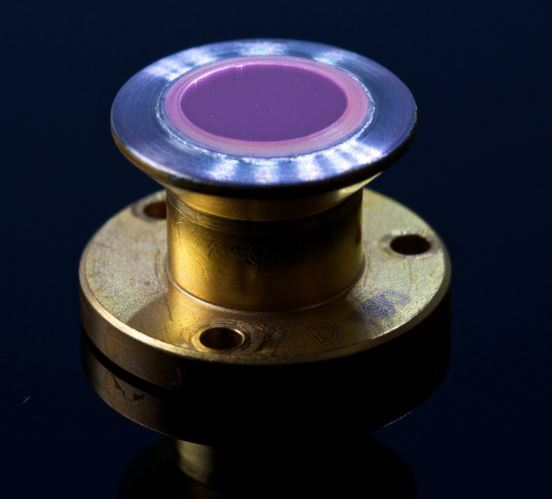
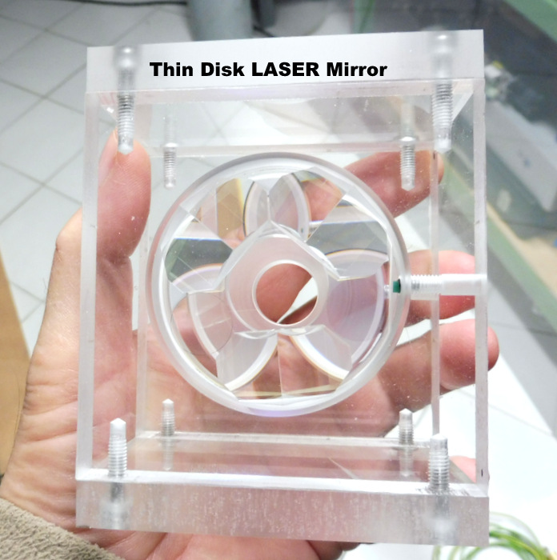
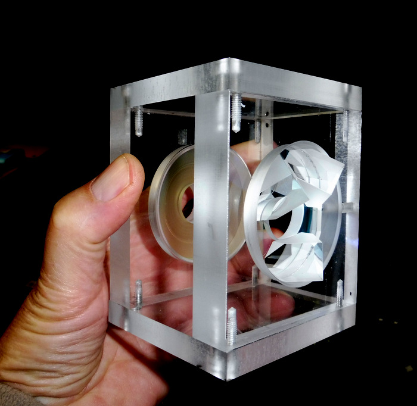
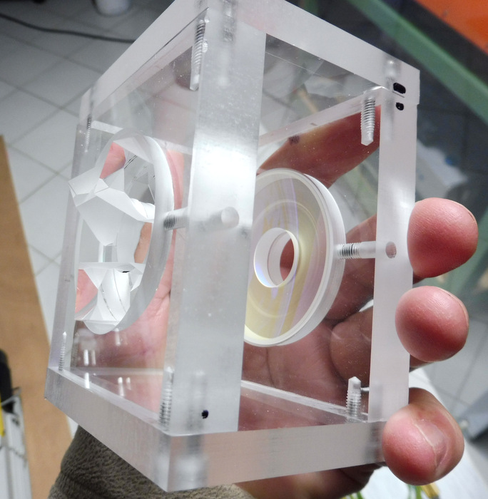

TDL LASER TDL=Thin Disk Laser The invention of the TDL dates from 1993 by Prof. A.Giesen (Appl.Physics B58 1994 p.365)
The definition of the laser disc is: a solid-state laser with an optically pumped heat sink having a thermal flux colinear with the optical axis.
In the first phase I will build a thin disk laser that is often referred to as a "mirror amplifier" in plexiglass so that the beam paths, the laser beam and the cooling circuits are well visualized.
The laser pump will be replaced by a laser diode at 530nm (green) for visualization.
In the second phase the plexiglass will be replaced by stainless steel.
"Disk" lasers are the most powerful lasers of all known types of lasers (solid, liquid and gaseous). They can work in continuous (60kW continuous) or in pulsed mode (Q-switching mode or in blocking mode) with a duration of 60 seconds. femtoseconds for crystals Yb: CALGO, average powers of 2kW and intensities of 2TW with TDL amplifiers!
The output power density of Yb: YAG is + 600kW.cm -3

Principle of operation: This type of laser consists of a monocrystal of the form of a flat and thin disk allowing to dissipate the heat well.
The disc is composed on the front of a multi-dielectric anti-reflection deposit (AR), then the mono-crystal amplifier having a thickness of 0.1mm to 2mm depending on the desired application. Then the back side is provided with a multi-dielectric coating with maximum reflection (HR).
This disc is glued or welded to a copper body for small powers.
For large powers (several kW) the disc is diffusion welded to a type IIa diamond disc which is cooled by a coolant jet.
In the laser I am going to build I use a YAG disc doped with 7% of
The pump source must have flow intensity of 80kWcm2sr-1
The pumping is done at 941 nm or 968 nm and the emission at 1030 nm using a fiber laser diode.
The Yb: YAG laser is a 3-level laser with a very high quantum efficiency and therefore suitable for continuous operation (cw).
It also has a long fluorescence duration (1ms) which is advantageous for making Q-switching mode and amplification.
The width of the fluorescence spectrum makes it possible to obtain picosecond pulses or even 600 femtoseconds.
So a number of advantages over the Nd: YAG
It is necessary to pumping on the 968nm transition and not 940nm it reduces the heating of the disk by a factor of 2 and increases the efficiency by 10%.
The low gain in the cavity resulting from the small thickness of the disk (100-200 microns) requires a quality factor Q of the very high resonator (50-100) so an output mirror having a transmission of 1 to 2% only.
Here is a prototype made of acrylic glass to visualize the path of the pumping rays. The finalized laser will be stainless steel.
In the photo on the right I mounted on a plexiglass flange a 53mm diameter parabolic mirror with a 21mm diameter hole in the center, allowing the laser beam to come out of the cavity. This parabolic mirror focuses at 45mm and the surface of it is coated with a multi-dielectric layer HR @ 941 and 968 nm.
Opposite is a 50mm diameter quartz flat disk on which is glued 3 prisms serving as a pump beam return, an inlet window of the treated pump beam AR @ 900nm at 1000nm and a totally reflective mirror HR @ 941 and 968nm.
The pump beam thus crosses the Yb: YAG disk 16 times.
The Yb: YAG disk is mounted on a support equipped with a circulation of water which can be set along 3 X, Y, Z axes.



Here's what the stainless steel laser will look like when finished! The one in the picture is from DAUSINGER + GIESER GmbH.